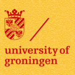

hoi
Opdrachtgevers


Hieronder vindt u een aantal voorbeelden van uitgevoerde opdrachten.
RUG en KU Leuven: career choice model
Opdracht
Bouw een webapp die ons simulatie model visualiseert en interactief maakt voor onze lezers. Wij willen graag dat de lezers van onze publicatie over het proces van studiekeuze zelf kunnen spelen met de parameters, zodat zij zien wat het effect ervan is in de gesimuleerde studiekeuze trajecten.Reactie van de klant
"Teun heeft voor ons een web-applicatie gebouwd die gebaseerd is op een wetenschappelijke simulatiestudie omtrent studiekeuze. Als een van de leiders van het team dat deze studie heeft uitgevoerd, kan ik het werk dat Teun heeft afgeleverd goed beoordelen. Ik was sterk onder de indruk van de kwaliteit van het werk dat hij in relatief korte tijd heeft afgeleverd. Hij heeft een behoorlijk gecompliceerd model op een zeer inzichtelijke manier vertaald naar een web-app, en ben ervan overtuigd dat zijn werk de impact van onze studie sterk ten goede zal komen. Ook was ik bijzonder goed te spreken over hoe Teun in tussenstadia van het project feedback snel verwerkte - hij dacht altijd mee, kwam met uitstekende eigen initiatieven, communiceerde op een heldere en gestructureerde manier, en stelde zich bijzonder dienstbaar op. Ik had me geen betere medewerker kunnen wensen, en wil hem hierbij dan ook zeer graag de best mogelijke aanbeveling geven!" - P. van den Berg, postdoctoraal onderzoeker Katholieke Universiteit LeuvenAanpak
- Interview met de opdrachtgever:
Wat is het doel van de site? Wie is de doelgroep? Wat houdt het onderzoek in? Hoe werkt het simulatie model precies? - Brainstorming:
Hoe zijn de vele getallen te visualiseren?. - Concepting:
Creatieve sessies waarin gezocht wordt naar verschillende webapp layouts en wat wel en wat niet te tonen in de app. - Vertaling code:
Het in C++ (programmeertaal) geschreven simulatie model vertalen naar javascript, zodat het live kan 'runnen' op een website. - Webapp ontwikkeling:
In een iteratief proces wordt de app ontwikkeld (html, css, javascript), telkens met terugkoppeling naar de opdrachtgever en wijziging of aanvulling van de app op basis van de verkregen feedback.
Resultaat
- De webapp:
Een 'live' animatie van een studiekeuze traject. Klik hier om zelf met de app te interacteren (opent in een nieuwe tab). - Interactief:
Gebruikers kunnen zelf 'aan de knoppen' zitten en studiekeuze trajecten simuleren door waardes van input parameters te veranderen en te zien hoe dat het resultaat beïnvloed. - Instant play:
Doordat het model niet eerst wordt uitgelegd (de gebruiker heeft er immers al over gelezen in de publicatie), maar juist het model direct zichtbaar is kunnen de bezoekers direct op 'play' klikken. - Snelle uitleg:
Aangezien het simulatiemodel best complex is krijgen de gebruikers korte uitleg bij de parameters op het moment dat zij iets met de parameters willen doen. De uitleg is makkelijk te negeren voor diegenen die het al kennen (mensen die de publicatie uitvoerig hebben gelezen). Voor diegenen die een beetje hulp kunnen gebruiken is het een snelle herinnering van hoe het ook alweer zit. - Begrijpelijk en aantrekkelijk:
In plaats van een tabel vol getallen is de data uit het onderzoek visueel en interactief, waardoor de betekenis van de verkregen data veel begrijpelijker en behapbaarder wordt.
Vending@Work: automatisering van mobiele registratie
Opdracht
Onderzoek de gebruiksvriendelijkheid van een PDA systeem dat wij willen invoeren. Met het systeem wordt de papieren administratie van onze operators (koeriers die snoepautomaten bijvullen op locatie) gedigitaliseerd.Reactie van de klant
"Umanise heeft voor ons een expert review uitgevoerd op ons in te voeren PDA systeem. In de nabije toekomst gaan wij PDA's gebruiken in onze operating. Teun Blijlevens van Umanise heeft zeer bruikbare adviezen gegeven die de gebruikersvriendelijkheid enorm zal verbeteren. Het rapport en zijn presentatie waren erg duidelijk en wij zullen zijn aanbevelingen zeker gaan volgen." - T. Hermsen, directeur Vending@WorkAanpak
- Expert review:
Snel verbeterpunten detecteren op basis van usability inzichten - Observatieonderzoek:
Meerijden met koerier op zijn werkdag, observeren en filmen van interacties - Interviews:
Operators vragen hoe het beter kan - Analyse en concepting:
Onderzoeksresultaten analyseren, gevolgd door creatieve sessies waarin naar oplossingen wordt gezocht voor de gevonden problemen. - Adviesrapport:
Concreet met oplossingsgerichte aanbevelingen - Prototype:
Online interactieve demo, waarin de aanbevelingen zijn gevisualiseerd, handig voor de ontwikkelaar om erbij te houden - Presentatie:
Bij zowel opdrachtgever als systeem ontwikkelaar
Resultaat
- Aangepast op de gebruiker:
Systeem is beter aangepast op de situatie, omgeving en het werkproces van de operator - Flexibiliteit:
Niet elke operator werkt in dezelfde volgorde. Vrije navigatie door de app en het mogelijk maken van zowel een taagerichte als een automaatgerichte oriëntatie zorgen ervoor dat elke operator zijn eigen werkproces kan hanteren zonder efficiëntie verlies. - Minder acties:
De acties die een operator in de app moet voltooien om een automaat af te handelen is meer dan gehalveerd zonder dat het resultaat is aangetast. - Massale tijdsbesparing:
De verwachte tijdswinst is 1 tot 2 uur per operator per dag. - ROI:
De verwachte terugverdientijd voor het ontwikkelen en implementeren van de verbeteringen is minder dan 1 jaar.
Veneca: website vernieuwing
Opdracht
Onderzoek en adviseer hoe de website gebruiksvriendelijker kan worden gemaakt qua navigatie en inhoudReactie van de klant
"Umanise heeft een concrete en heldere website-analyse gemaakt. Op basis van onze wensen kregen wij een uitgebreid advies met de vrijblijvende optie samen met een Umanise partner de webstie te laten bouwen. Dit bleek een gouden greep. Voor de webbouwer scheelde het veel tijd (en ons geld), want alle eisen stonden al uitgeschreven. Een optimale combinatie die ons veel heeft opgeleverd voor een zeer acceptabele totaalprijs." - J. van Straten, algemeen secretaris VenecaAanpak
- Interview met de opdrachtgever:
Wat is het doel en de doelgroep van de site? - Expert review:
Uitgebreid verbeterpunten detecteren op basis van usability inzichten en website analytics - Tekst analyse:
Samen met een communicatieadviseur alle teksten bekijken, verkorten en beter ordenen ter bevordering van een duidelijke navigatie structuur - Analyse en concepting:
Onderzoeksresultaten analyseren, gevolgd door creatieve sessies waarin naar oplossingen wordt gezocht voor de gevonden problemen. - Adviesrapport:
Concreet met oplossingsgerichte aanbevelingen - Presentatie:
Aanbevelingen helder en overtuigend overgebracht aan opdrachtgever - Doorverwijzing:
In contact brengen met website ontwikkelaar die deze aanbevelingen zeker kan implementeren
Resultaat
- Minder menu knoppen:
Beter overzicht wat de site te bieden heeft en makkelijker navigeren - Duidelijkere namen:
De site is beter scanbaar door duidelijkere koppen, knoppen en links - Zichtbare zoekfunctie:
Men hoeft niet meer te 'zoeken' naar de zoekfunctie - Efficiëntere informatie indeling:
Minder pagina's nodig, meer overzicht en duidelijkere navigatie - Duidelijker inloggedeelte:
Leden hoeven niet meer te zoeken om in te loggen - Professionelere uitstraling:
Een website die beter past bij het heden geeft een betere gebruikservaring en meer vertrouwen in de organisatie
Dauw: verbetering nieuwe website
Opdracht
Test de usability van een innovatieve website die wij voor een klant hebben gemaakt. Onderzoek en adviseer hoe de website gebruiksvriendelijker kan.Reactie van de klant
"Voor een website van een opdrachtgever bij Dauw, heeft Teun een uitgebreid onderzoek gedaan naar het gebruiksgemak. Dit resulteerde in een uitermate gedetailleerd en intelligent uitgedacht rapport. Bij Dauw waren we erg onder de indruk van de creatieve oplossingen die Teun aan de hand van de kritieken wist te bedenken. In het opgeleverde rapport heeft Teun zeer heldere en concrete adviezen opgeleverd, waardoor het gebruiksgemak enorm zal toenemen." - D. van Willigenburg, co-founder DauwAanpak
- Interview met de opdrachtgever:
Hoe zijn jullie gekomen tot dit ontwerp? Waarom zijn bepaalde aparte keuzes gemaakt? - Interview met de klant:
Wat is het doel en wie is de doelgroep van de site? - Expert review:
Snel verbeterpunten detecteren op basis van usability inzichten - Persona's:
Fictieve gebruikers van de site opstellen ter bevordering van het uit te voeren observatieonderzoek. - Observatieonderzoek:
Op basis van persona's en fictieve situaties gebruikers taken laten uitvoeren en hun interacties met de site observeren en filmen - Interviews met de onderzoeksdeelnemers:
Wat is er goed? wat kan er beter? hoe kan dat beter? - Analyse en concepting:
Onderzoeksresultaten analyseren, gevolgd door creatieve sessies waarin naar oplossingen wordt gezocht voor de gevonden problemen. - Adviesrapport:
Concreet met oplossingsgerichte aanbevelingen - Presentatie:
Het ontwikkelteam van de site enthousiast maken met helder gevisualiseerde en overtuigende aanbevelingen
Resultaat
- Vergroot content oppervlakte:
Meer ruimte voor tekst en plaatjes - Efficiëntere informatie indeling:
Minder pagina's nodig, meer overzicht - Minder knoppen:
De betere informatie indeling zorgt ook voor kleinere (sub)menu's wat ten goede komt van de navigatie - Het bedrijf heeft een 'gezicht' gekregen:
Doormiddel van plaatjes krijgen afdelingen een beter 'gezicht', waardoor de gebruiker beter weet waar hij mee te maken heeft. - Duidelijkere namen:
De gebruiker weet beter wat hij onder bepaalde knoppen en koppen kan verwachten - Beter scanbare teksten:
Beter passende koppen, gebruik van functionele blanco regels en gebruik van links zorgen ervoor dat de teksten sneller te scannen zijn, zodat de gebruiker sneller vindt wat hij/zij nodig heeft.